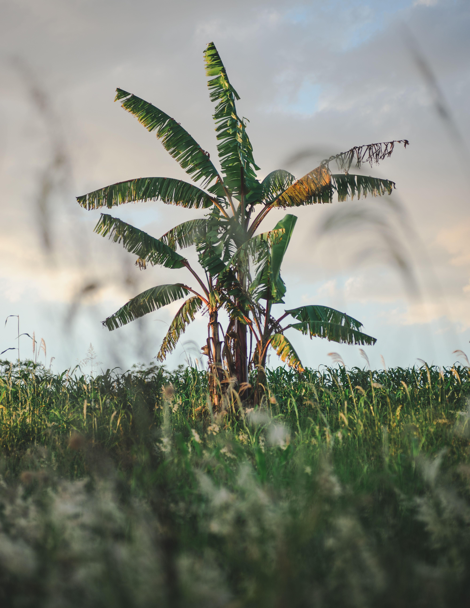
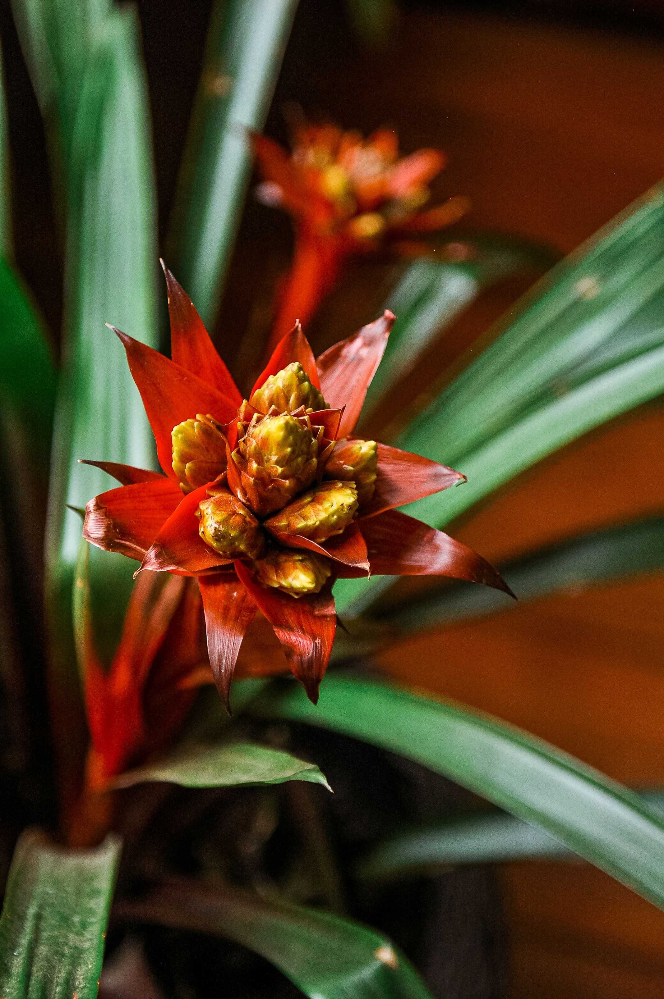
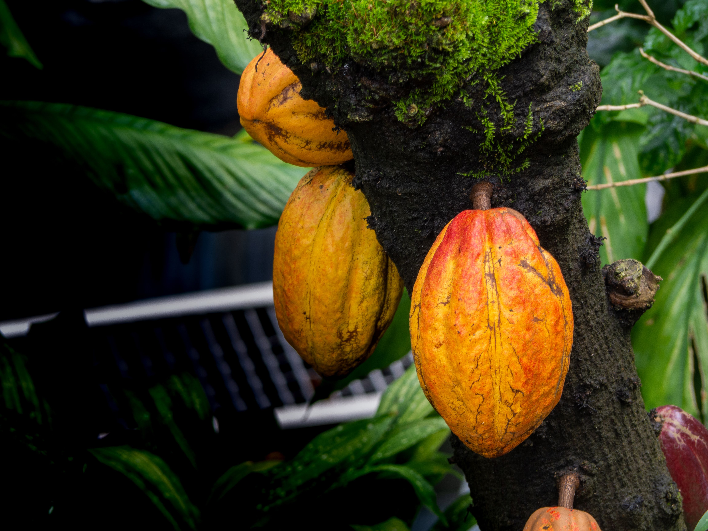

Banánfa
- Élőhely: Trópusi/szubtrópusi területek.
- Magasság: 2–7 méter.
- Levelei: Hosszúak, szélesek és élénkzöldek.
- Termése: A banán, amely vitaminokban és ásványi anyagokban gazdag.
- Érdekesség: A banánfa valójában nem igazi fa, hanem egy hatalmas lágyszárú növény.

Brómélia
- Élőhely: Közép- és Dél-Amerika trópusi területei.
- Magasság: Néhány centitől akár több méterig.
- Levelei: Kör alakban helyezkednek el.
- Virágai: Sok fajtának feltűnő, színes virágzata van.
- Érdekesség: Egyes broméliák levelei között összegyűlik az esővíz, amely apró állatoknak is élőhelyet biztosíthat.

Kakaófa
- Élőhely: Közép- és Dél-Amerika..
- Magasság: 4–8 méter.
- Levelei: Nagyok, hosszúkásak és zöldek.
- Termése: Nagy, ovális kakaótermés, amelynek belsejében kakaóbabok találhatók.
- Érdekesség: A kakaófa virágai és termései közvetlenül a törzsén és a vastagabb ágain is megjelenhetnek.